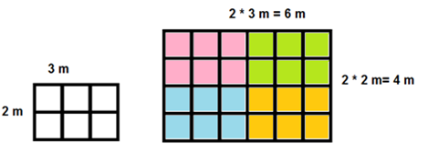
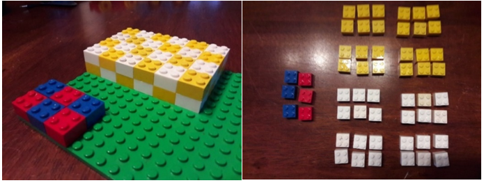

Mittakaavat
Contents
Mittakaavat#
Mittakaava on eräs suoraan verrannollisuuden sovellus. Jos esimerkiksi suoran tieosuuden pituus maastossa on \(x\), niin sen pituus \(y \) kartalla riippuu luvusta \(x\) yhtälön \(y=kx\) mukaisesti. Verrannollisuuskertoimesta \(k\) käytetään tällöin nimitystä mittakaava. Mittakaavoihin liittyvät laskukaavat ovat erilaisia, kun tarkastellaan
pituuksien suhteita luonnossa ja kartalla,
pinta-alojen suhteita luonnossa ja kartalla,
tilavuuksien suhteita luonnossa ja esim. pienoismallissa.
Kaikissa tapauksissa lähtökohtana on käsite nimeltä yhdenmuotoisuus. Kahta tasokuviota sanotaan yhdenmuotoisiksi, jos toinen saadaan toisesta siirtämällä, pienentämällä tai suurentamalla, kiertämällä tai peilaamalla. Kuvioiden toisiaan vastaavat pisteet ovat vastinpisteitä ja niiden väliset janat vastinjanoja. Mittakaava on vastinjanojen pituuksien suhde.
Esim. Oheiset kuviot ovat yhdenmuotoisia. Vastinpisteitä ovat esim. E ja P, A ja L, C ja N. Vastinjanoja ovat esim. EA ja PL, DC ja ON.
Pituuksien suhteita#
Pituuksien suhteisiin liittyvissä ongelmissa pätee yhtälö \(y=kx\). Verrannollisuuskerroin eli mittakaava \(k\) tarkoittaa yhdenmuotoisten kuvioiden vastinjanojen pituuksien suhdetta. Yleensä mittakaavaa merkitään jakolaskumuodossa kaksoispisteellä esitettynä, esimerkiksi mittakaava \(1:5000\) tarkoittaa verrannollisuuskerrointa \(k=\frac{1}{5000}\).
Esim. Eräässä kartassa mittakaava on 1:5000. Kuinka pitkä kartalla on pellon sivu, jonka pituus luonnossa on 200 m?
Ratkaisu
Merkitään sivun pituutta maastossa \(x\) ja kartalla \(y\). Yhtälö, joka kuvaa näiden suhdetta, on \(y=kx\). Sivun pituus \(y\) kartalla saadaan sijoittamalla yhtälöön \(k\) ja \(x\), siis \(y=\frac{1}{5000}\cdot 200~\text{m}=\frac{200}{5000}~\text{m}=0.04~\text{m}\).
Esim. Paljonko on polun pituus maastossa, jos se on retkeilykartassa (mittakaava 1:20 000) 8.5 cm pitkä?
Ratkaisu
Käytetään seuraavia merkintöjä: \(x\) on polun pituus maastossa, \(y\) on polun pituus kartalla, \(k\) on mittakaava.
Ratkaistaan \(x\) yhtälöstä \(y=kx\), jolloin saadaan \(x=\frac{y}{k}\). Sijoitetaan \(y\) ja \(k\) yhtälöön: \(x=\frac{0.085~\text{m}}{1:20000}\). Murtolukujen laskusääntöjen mukaisesti murtoluvulla jakaminen muuttuu sen käänteisluvulla kertomiseksi, siis \(x=0.085~\text{m}\cdot 20 000 = 1700~\text{m}\).
Kun mittakaavaa lasketaan, tuloksena voi olla desimaaliluku. Tämä voidaan ilmaista muodossa \(k=\frac{1}{a}\), josta saadaan ratkaistua \(a=\frac{1}{k}\). Tämän jälkeen mittakaava voidaan kirjoittaa, kuten se yleenä kartoissa yleensä esitetään, \(1:a\).
Esim. Tien pituus maastossa on 360 m ja kartalla 14 cm. Mikä on kartan mittakaava?
Ratkaisu
Mittakaava on \(k=\frac{0.14}{360}=0.00038888\ldots \approx 0.000389\). Huomaa, että pituuksien täytyy olla jakolaskussa samassa yksikössä. Tässä tapauksessa pituus kartalla on muutettu metreiksi, mutta sama tulos saataisiin jos muutettaisiin pituus maastossa senttimetreiksi - tai vaikka kumpikin pituus desimetreiksi tai kilometreiksi.
Ilmaistaan mittakaava muodossa \(k=1:a\) ratkaisemalla yhtälö
\(0.000389=\frac{1}{a}\).
Tästä saadaan \(a=\frac{1}{0.000389}\approx 2571\). Mittakaava on siis suunnilleen 1:2571.
Pinta-alojen suhteita#
Jos kahden yhdenmuotoisen alueen pinta-alat ovat \(A_1\) ja \(A_2\), niin mittakaava \(k\) riippuu pinta-alojen suhteesta seuraavasti: \(k^2=\frac{A_1}{A_2}\). Tästä saadaan toinen määritelmä mittakaavalle: \(k=\sqrt{\frac{A_1}{A_2}}\).

Kuvan esimerkissä oikean puolen alue on suurennos vasemmasta kuviosta mittakaavassa 1:2, sillä kaikki sivut ovat kasvaneet kaksinkertaisiksi. Ruudut laskemalla huomataan, että pinta-ala on nelinkertaistunut:
\(A_1=2~\text{m} \cdot 3~\text{m}=6~\text{m}^2, A_2=4~\text{m}\cdot 6~\text{m}=24~\text{m}^2\).
Tarkistetaan, että mittakaava on todellakin alojen suhteen neliöjuuri:
\(k=\sqrt{\frac{6~\text{m}^2}{24~\text{m}^2}}=\sqrt{\frac{1}{4}}=\frac{\sqrt{1}}{\sqrt{4}}=\frac{1}{\sqrt{4}}=\frac{1}{2}=1:2\).
Esim. Urheilukentän pinta-ala on kartalla \(16~\text{cm}^2\) ja oikeasti \(4900~\text{m}^2\).
a) Mikä on kartan mittakaava?
b) Kuinka pitkä on tie, jonka pituus on kartalla 18 cm?
Ratkaisu
a) Muutetaan ensin pinta-alat samaan yksikköön: \(1~\text{cm}^2=0.0001~\text{m}^2\).
Merkitään \(A_1=0.0016~\text{m}^2,A_2=4900~\text{m}^2\).
Lasketaan mittakaava: \(k=\sqrt{\frac{0.0016~\text{m^2}}{4900~\text{m}^2}}\approx 0.000571\).
Mittakaava voidaan ilmaista myös muodossa 1:a laskemalla \(a=\frac{1}{0.000571}\approx 1751\), siis mittakaava on noin 1:1751.
b) Tien pituus \(x\) saadaan nyt ratkaisemalla se yhtälöstä \(y=kx\), siis \(x=\frac{y}{k}\).
Sijoitetaan yhtälöön mittakaava \(k\) ja tien pituus \(y\): \(x=\frac{18~\text{cm}}{0.000571}=31524~\text{cm}\approx 315.24~\text{m}\).
Esim. Talon pohjapiirros on piirretty mittakaavassa 1:75. Talon pinta-ala on piirroksessa \(A_1=0.027~\text{m}^2\). Mikä on todellinen pinta-ala \(A_2\)?
Ratkaisu
Pinta-alojen suhteelle pätee \(\frac{A_1}{A_2} =k^2\).
Ratkaistaan yhtälöstä kysytty pinta-ala \(A_2\): \(\frac{A_1}{A_2} =k^2 \leftrightarrow A_2 k^2 = A_1 \leftrightarrow A_2=\frac{A_1}{k^2}\).
Sijoitetaan lukuarvot: \(A_2=\frac{0.027~\text{m}^2}{\left(1/75\right)^2} = \frac{0.027~\text{m}^2}{\frac{1}{75^2}}=0.027~\text{m}^2 \cdot 75^2 \approx 152~\text{m}^2\).
Tilavuuksien suhteita#
Jos kahden yhdenmuotoisen kappaleen tilavuudet ovat \(V_1\) ja \(V_2\), niin mittakaava \(k\) riippuu tilavuuksien suhteesta seuraavasti: \(k^3=\frac{V_1}{V_2}\). Tästä saadaan kolmas määritelmä mittakaavalle: \(k=\sqrt[3]{\frac{V_1}{V_2}}\).
Laskimella kuutiojuuren \(\sqrt[3]{\frac{V_1}{V_2}}\) voi laskea muodossa \(\left(\frac{V_1}{V_2}\right)^{\frac{1}{3}}\).

Kuvassa olevien rakennelmien mittakaava on 1:2, sillä kaikkien sivujen pituudet ovat isommassa rakennelmassa kaksinkertaiset pienempiin verrattuna. Purkamalla rakennukset osiin huomataan, että pienemmän rakennelman tilavuus on 6 yksikköä, ja isomman tilavuus on 48 yksikköä. Tarkistetaan, että mittakaava on todellakin tilavuuksien suhteen kuutiojuuri:
\(k=\sqrt[3]{\frac{6}{48}}=\sqrt[3]{\frac{1}{8}}=\frac{\sqrt[3]{1}}{\sqrt[3]{8}}=\frac{1}{2}=1:2\).
Jos pieni ja iso kappale on tehty yhtä tiheästä aineesta, niin tilavuuksien suhde on sama kuin massojen suhde, siis \(k^3=\frac{m_1}{m_2}\).
Esim. 25 cm pitkä kala painaa 1 kg. Paljonko painaa 50 cm pitkä kala, jos oletetaan, että kalat ovat yhdenmuotoisia?
Ratkaisu
Mittakaava on pituuksien suhde: \(k=\frac{25}{50}=\frac{1}{2}\).
Massojen suhde on mittakaavan kolmas potenssi: \(\frac{m_1}{m_2} =\left(\frac{1}{2}\right)^3\).
Ratkaistaan tästä tuntematon massa \(m_2\):
\(\frac{m_1}{m_2} =\left(\frac{1}{2}\right)^3 \leftrightarrow m_2=m_1\cdot 2^3 \leftrightarrow m_2=8\cdot 1~\text{kg} \leftrightarrow m_2=8~\text{kg}\).
Esim. Pieneen maljakkoon mahtuu 0.75 litraa vettä ja suureen maljakkoon 3 litraa. Maljakot ovat yhdenmuotoisia. Mikä on maljakoiden mittakaava? Kuinka korkea on suurempi maljakko, jos pienemmän maljakon korkeus on 12 cm? Maljakoiden muodosta ei ole tarkempaa tietoa.
Ratkaisu
Mittakaavan kolmas potenssi on tilavuuksien suhde: \(k^3=\frac{0.75}{3}\). Tästä saadaan \(k=\sqrt[3]{\frac{0.75}{3}}=0.63\).
Suuren maljakon korkeus saadaan yhtälöstä \(y=kx\) eli \(12~\text{cm}=0.63\cdot x\), eli \(x=\frac{12~\text{cm}}{0.63}=19~\text{cm}\).